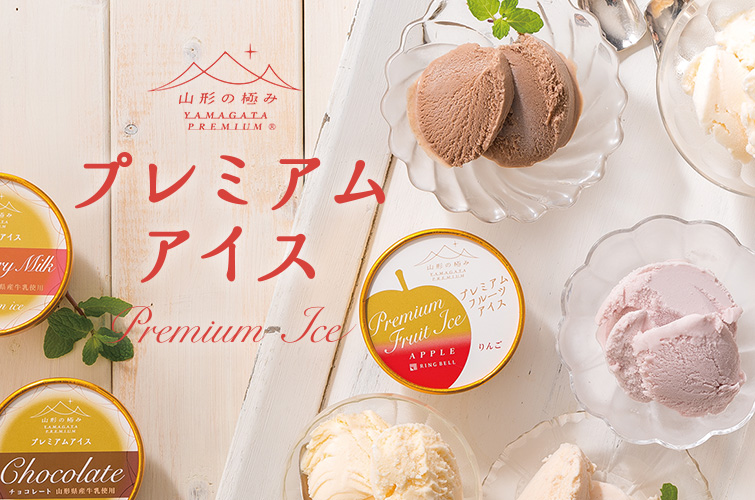
- 目指したのは、原点回帰。
無添加の厳選素材だけでつくった、シンプルな昭和のアイスクリーム -
様々な上質なギフト商材を日々取扱う私たちリンベルが、ことアイスクリームにおいて、多様な美味や味わいのものがあるにも関わらず、後味がべたつかず、涼感と甘みがスッと口で溶ける、昔風味の味わいのアイスクリームが少ないということに気付いたのは、2013年の夏の頃でした。
以後、全国の数多くのアイスクリームを試食し、そうした味わいを探し続けましたが、求める味と出会うことはできませんでした。
そこで、その理想の味を自ら作り出すことを試み、生まれたのが、このリンベル プレミアムアイスです。
- 乳化剤・安定剤・香料・人工甘味料などを一切使用しない
無添加へのこだわり -
一般的なアイスクリームの多くは、牛乳などの油分が、他の水分との分離を防ぐために、安定剤・乳化剤を使用していますが、このプレミアムアイスクリームでは、それらを使わず、乳化安定のために、原料のひとつである卵黄の中に含まれるレシチンという成分を活用しています。
これも、卵黄の質が悪ければ実現できないことですが、リンベルのプレミアムアイスクリームでは、使用する卵黄も厳選し、質と鮮度の高いものだけを使うことにより、安定剤・乳化剤の不使用を実現しています。
-
新鮮な山形県産の牛乳だけを使用
牛乳へのこだわり -
プレミアムアイスクリームの主原料となる牛乳は、豊かな大地と清らかな水に恵まれた山形県産の牛乳だけを使用。
多くのアイスクリームは、コクを高めるために牛乳を加工したバターを使用していますが、このアイスでは、上質な後味を目指し、あえてバターを使わず、昔ながらのシンプルな味わいを追求しました。
これにより、他のアイスにありがちな、食後に水が飲みたくなるようなべっとりとした後味ではなく、切れの良いシルキーな味わいを実現しました。
-
コクと旨味が強い新鮮な山形産 赤玉卵だけを使用
卵黄へのこだわり -
素材の鮮度とトレーサビリティにもこだわり、気候風土に恵まれた山形県米沢の、顔の見える鶏舎で取れたコクと旨味が強い茶羽の鶏が産む赤玉卵を使用しています。
黄身を摘まんでもプルッとつかめるくらい力強い新鮮な卵の旬の味わいにもこだわり、採卵から一番旨味が高くなるといわれる数日後の卵の黄身だけを使って、プレミアムアイスクリームは生まれます。
この品質と鮮度が、乳化剤・安定剤を使わない秘密のひとつです。
-
甘すぎず、切れのいい後味を生み出すための
ナチュラルな甘みへのこだわり -
プレミアムアイスクリームの一番のこだわりである、口に含んだ時にしっかりとした自然な甘みと旨味を感じさせながらも、口どけ後は、べたつかずに、すっと切れる後味。
そのナチュラルでありながら、しっかりとした甘みと、理想の後味を追求し、試行錯誤の末にたどり着いたのは、やはり原点回帰でした。
一般的に使われる添加物などを一切使わず、シンプルにグラニュー糖と上白糖だけを使い、理想的な配合により、口に入ったときの涼感に負けず、かつ口どけの後は切れのいい上質な甘みを実現しました。
- そして… 鮮度とクオリティを直接お届けする
直送へのこだわり - 素材の鮮度にこだわったリンベルのプレミアムアイスクリームは、パティシェのスイーツ作り同様、大量生産や作り置きができません。そのため、一般のお店での単品販売などは行わず、ご注文に応じて、工場からお届け先への直接出荷だけのお取り扱いとなります。
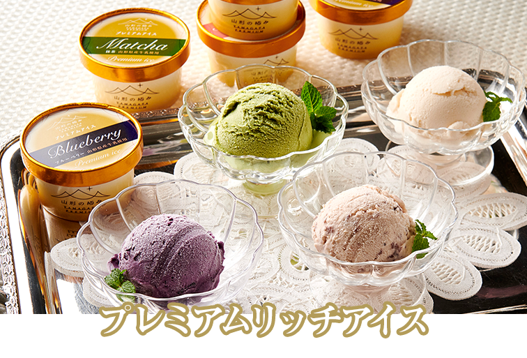
卵黄や牛乳などを山形県産にこだわり、乳化剤などの添加物を使用していない特製のアイスクリーム。新登場の「あずき」・「抹茶」・「ブルーベリー」が加わったリッチアイス、定番の「バニラ」・「つや姫」・「チョコレート」「いちごミルク」を中心に味わえるプレミアムアイスがお楽しみいただけます。
-
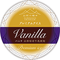
- バニラ
- 良質なバニラビーンズをふんだんに使用しました。「プレミアムアイス」の濃厚な味わいが相まって、懐かしい味と香りをお楽しみいただけます。
-
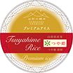
- つや姫
- 山形が誇るブランド米「つや姫」を配合。なめらかな舌触りのなかで、米の食感が甘みを高め、噛めばもちっとした不思議な味わいが生まれます。
-
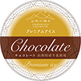
- チョコレート
- アンデス山脈の自然豊かな麓で育ったカカオ豆を原料に、チョコレートジェラートに仕立てました。香料不使用で、独特の芳しさが魅力です。
-
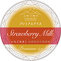
- いちごミルク
- 高い糖度とほどよい酸味の、山形県産とちおとめを使用し、懐かしさ漂ういちごミルクに。いちごと練乳の絶妙な味のバランスをお楽しみください。
-
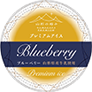
- ブルーベリー
- 月山高原のブルーベリーをふんだんに使用。旬に摘んだものを冷凍せずそのまま加工することで、色鮮やかで香りのよいブルーベリーアイスに。
-
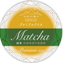
- 抹茶
- 日本茶鑑定士・小松幸哉氏が厳選した静岡の抹茶を使用。温度調整を何度も繰り返し、時間をかけて鮮やかな色合いと渋みを引き出しました。
-
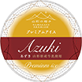
- あずき
- 山形県川西町の老舗菓子店『銘菓の錦屋』の十代目が作った、北海道産小豆のこだわり餡をアイスに。脱脂濃縮乳を加えたコクのある味わいです。
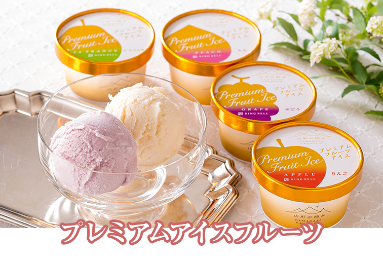
なめらかで濃厚なプレミアムアイスクリームに、「まるでフルーツをそのまま食べているかのよう」と、大好評をいただいているプレミアムデザートジュースを１：１で配合することで生まれたのが、ジェラートテイストの新しい味わい「プレミアムフルーツアイス シリーズ」です。
-
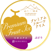
- ぶどう
- 濃厚な甘みの「デラウェア」、果汁たっぷりの「黒系ぶどう」をブレンド。ぶどうの深みある味わいと、奥行きのある芳醇な香りをお楽しみください。
-
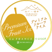
- ら・ふらんす
- 気品ある味わいから果物の貴婦人と呼ばれるラ・フランスは山形を代表する果物の一つ。「旬」の甘くとろける食感と芳醇な味わいをアイスに閉じ込めました。
-
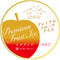
- りんご
- 甘みの強い「ふじ」と、さわやかな香りが特長の「紅玉」をブレンドすることで、しっかりとした濃厚な甘みと香りを引き出しました。
-
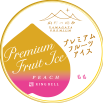
- もも
- 夏から秋にかけての短い時期に旬を迎える桃。剥きたての美しい色あいと、やわらかな甘さと香り、そして深い桃の旨みをアイスに閉じ込めました。

プレミアムアイスフルーツ


牧場で食べるミルクソフトクリームみたいな
牛乳の濃厚な風味
製菓衛生師・お菓子研究家 marimoさん
詳しくはこちら